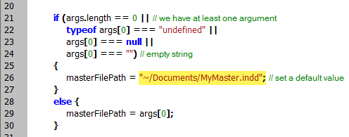
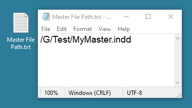
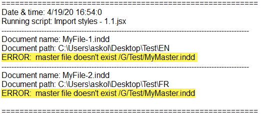
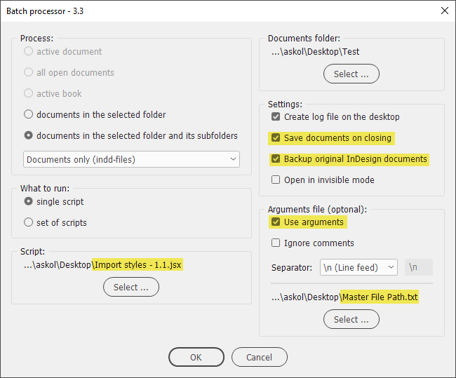
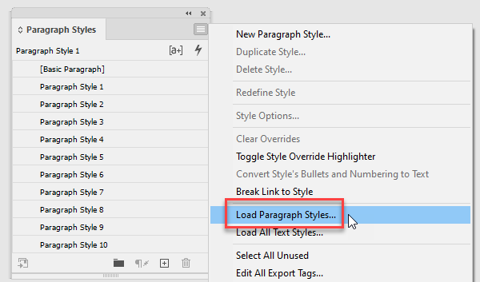
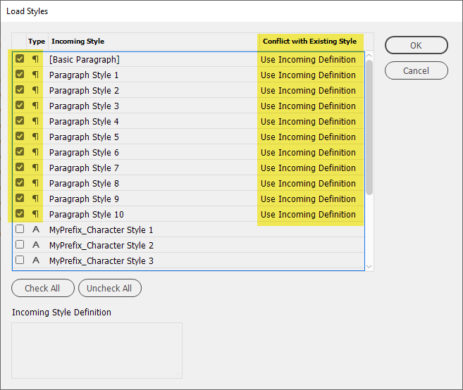
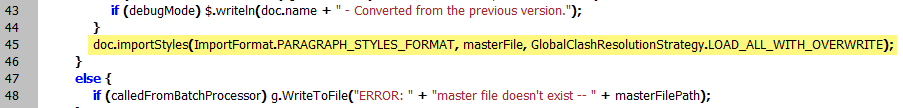
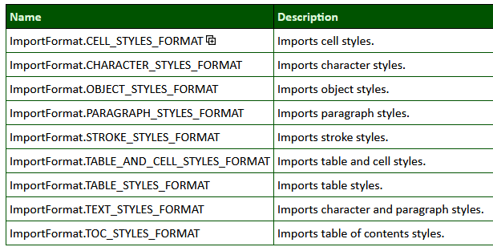
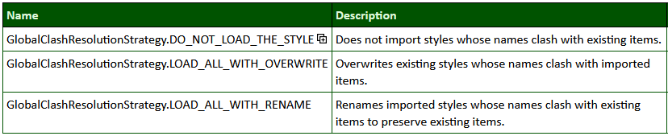

Import paragraph styles
Script for InDesign. Version 1.2. Written by Kasyan in InDesign 2020. It can be used with the batch processor or as it is.
It imports (loads) paragraph styles from a master document which is hard-coded into the script: MyMaster.indd in the user’s Documents folder. Feel free to change it to whatever you need.

With the batch processor, you can optionally use an arguments file instead of a constant value hard-coded into the script (a sample is included with the script).
Using it you can easily switch between different files. If the arguments file is selected, it will be used, otherwise the file defined in the script.

If the master document doesn’t exist, a warning will be written into the log:

The dialog box

As the name suggests, the script imports paragraph styles from a ‘master’ document overwriting existing styles whose names clash with imported items. In other words, it works in the same way, as you would manually select Load paragraph styles from the Paragraph styles panel

with Use Incoming Definition selected for all the styles in the Conflict with Existing Style column.

You can easily adjust the script to import other types of styles: for example, all text styles, or table styles: you need to tweak this line (or duplicate and edit more lines like this).

Use this table as a reference:

If you want to change the resolution strategy to employ for imported styles that have the same names as existing styles (the second argument in the above-mentioned line), use this table, or this reference:

Click here to download the script. See also a similar Load masterspreads script.